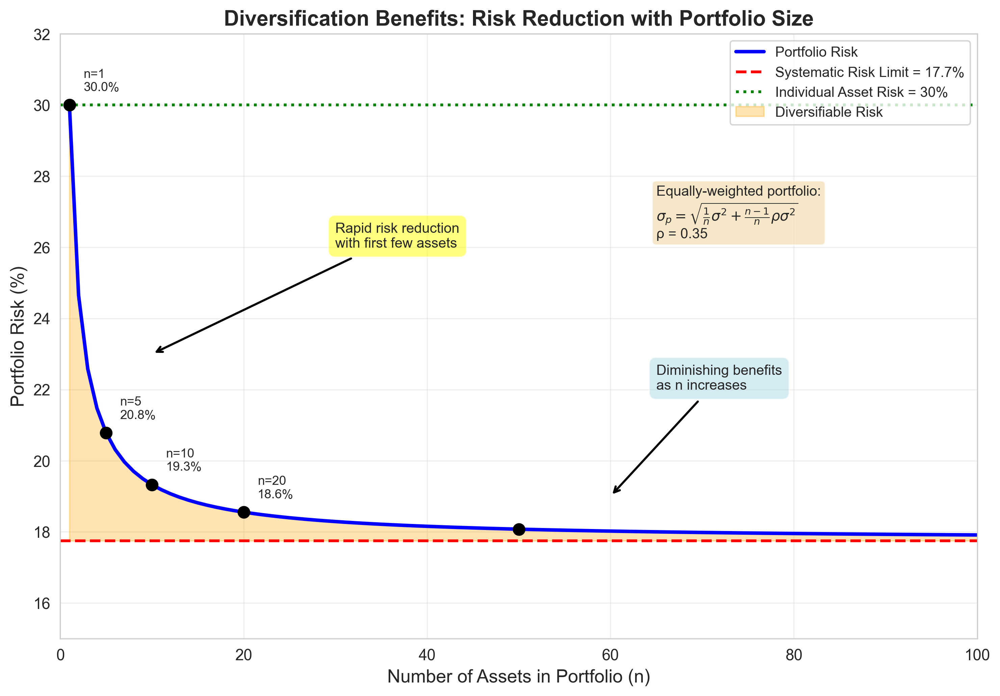
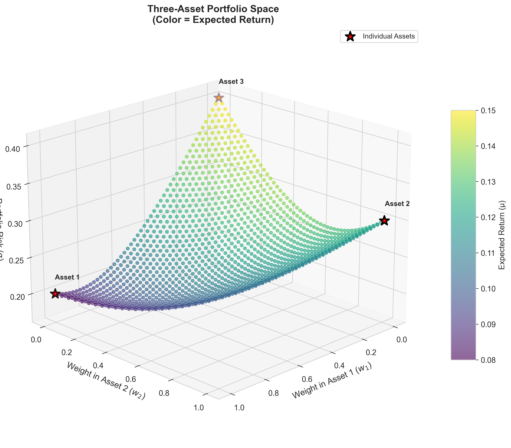
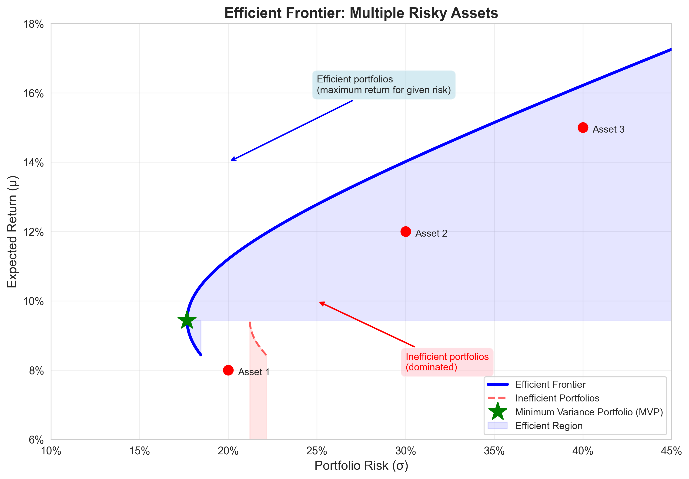
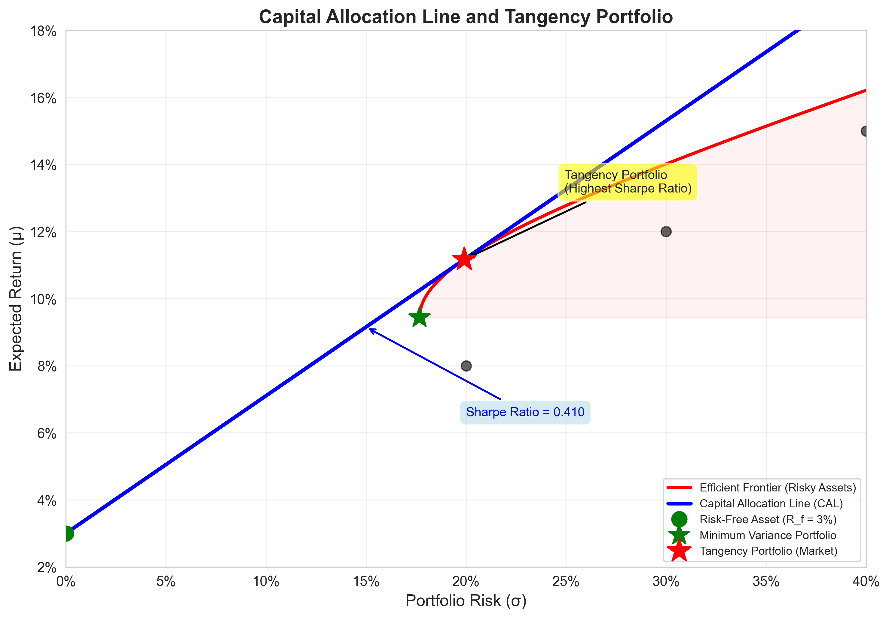

Sukrit Mittal Franklin Templeton Investments
The two-asset case taught us geometry.
The multi-asset case teaches us structure.
Nothing fundamentally new appears.
What changes is notation—and discipline.
Real portfolios:
Let:
Portfolio return:
\[ R_p = w^\top R \]
Budget constraint:
\[ \sum_{i=1}^n w_i = 1 \]
Let \(\mu = \mathbb{E}[R]\) be the vector of expected returns.
Then:
\[ \mathbb{E}[R_p] = w^\top \mu = \sum_{i=1}^n w_i \mu_i \]
Interpretation:
Suppose: * Asset 1: \(\mu_1 = 8\%\), \(w_1 = 0.3\) * Asset 2: \(\mu_2 = 12\%\), \(w_2 = 0.5\) * Asset 3: \(\mu_3 = 15\%\), \(w_3 = 0.2\)
Portfolio expected return: \[ \mu_p = 0.3(0.08) + 0.5(0.12) + 0.2(0.15) = 0.024 + 0.060 + 0.030 = 0.114 = 11.4\% \]
Let \(\Sigma\) be the covariance matrix:
\[ \Sigma_{ij} = \text{Cov}(R_i, R_j) \]
Portfolio variance:
\[ \sigma_p^2 = w^\top \Sigma w = \sum_{i=1}^n \sum_{j=1}^n w_i w_j \Sigma_{ij} \]
This single quadratic form drives modern portfolio theory.
Expanded form:
\[ \sigma_p^2 = \sum_{i=1}^n w_i^2 \sigma_i^2 + \sum_{i=1}^n \sum_{j \neq i} w_i w_j \text{Cov}(R_i, R_j) \]
The cross terms dominate for large \(n\).
Symmetric: \(\Sigma_{ij} = \Sigma_{ji}\)
Positive semi-definite: \(w^\top \Sigma w \geq 0\) for all \(w\)
Invertible (usually): \(\Sigma^{-1}\) exists
Consider the covariance matrix:
\[ \Sigma = \begin{pmatrix} 0.04 & 0.01 & 0.02 \\ 0.01 & 0.09 & 0.03 \\ 0.02 & 0.03 & 0.16 \end{pmatrix} \]
For \(w = (0.3, 0.5, 0.2)^\top\):
\[ \sigma_p^2 = w^\top \Sigma w = 0.3^2(0.04) + 0.5^2(0.09) + 0.2^2(0.16) = 0.0439 \]
Therefore: \(\sigma_p = \sqrt{0.0439} = 20.95\%\)
The diversification benefit is embedded in the covariances.
Expected return is linear in \(w\). Variance is quadratic in \(w\).
As \(n\) increases:
For equally weighted portfolios (\(w_i = 1/n\)):
\[ \sigma_p^2 = \frac{1}{n} \bar{\sigma}^2 + \frac{n-1}{n} \bar{\text{Cov}} \]
Where: * \(\bar{\sigma}^2\) = average variance * \(\bar{\text{Cov}}\) = average covariance
As \(n \to \infty\):
\[ \sigma_p^2 \to \bar{\text{Cov}} \]
Interpretation: Diversification eliminates idiosyncratic risk. Only systematic (correlated) risk remains.
Consider \(n\) assets with: * Individual variance: \(\sigma^2 = 0.09\) (30% volatility) * Average pairwise correlation: \(\bar{\rho} = 0.35\) * Hence, average pairwise covariance: \(\bar{\text{Cov}} = 0.0315\)
Equally weighted portfolio variance:
| \(n\) | \(\sigma_p^2\) | \(\sigma_p\) | Reduction |
|---|---|---|---|
| 1 | 0.0900 | 30.00% | 0% |
| 5 | 0.0432 | 20.78% | 31% |
| 10 | 0.0373 | 19.33% | 36% |
| 50 | 0.0326 | 18.07% | 40% |
| \(\infty\) | 0.0315 | 17.75% | 41% |
Risk decreases rapidly at first, then asymptotes. This is the power—and limit—of diversification.
Diversification Benefits:

Figure: Portfolio risk decreases as the number of assets increases, but approaches a limit (systematic risk) that cannot be diversified away.
With three risky assets:
Yet the efficient set collapses to a curve.
More choice does not mean more freedom.
Three-Asset Portfolio Space:

Figure: Portfolio possibilities in three-asset space. The simplex shows all valid portfolios where weights sum to 1. Color indicates expected return.
For three assets:
\[ R_p = w_1R_1 + w_2R_2 + w_3R_3 \]
\[ \sigma_p^2 = w^\top \Sigma w \]
With \(w_1 + w_2 + w_3 = 1\).
Same equations. Higher dimension.
The minimum variance portfolio solves:
\[ \min_w \quad w^\top \Sigma w \]
subject to:
\[ u^\top w = 1 \]
Expected returns play no role here.
Risk comes first.
Why find the MVP?
Step 1: Form the Lagrangian
\[ \mathcal{L}(w,\lambda) = w^\top \Sigma w + \lambda(u^\top w - 1) \]
Where: * \(\lambda\) is the Lagrange multiplier * The constraint \(u^\top w = 1\) ensures weights sum to 1
Step 2: Take first-order conditions
Differentiate with respect to \(w\):
\[ \frac{\partial \mathcal{L}}{\partial w} = 2\Sigma w + \lambda u = 0 \]
Differentiate with respect to \(\lambda\):
\[ \frac{\partial \mathcal{L}}{\partial \lambda} = u^\top w - 1 = 0 \]
This is linear algebra, not magic.
From the first condition:
\[ 2\Sigma w + \lambda u = 0 \]
Rearranging:
\[ \Sigma w = -\frac{\lambda}{2} u \]
Multiply both sides by \(\Sigma^{-1}\):
\[ w = -\frac{\lambda}{2} \Sigma^{-1} u \]
Apply the constraint \(u^\top w = 1\):
\[ u^\top w = -\frac{\lambda}{2} u^\top \Sigma^{-1} u = 1 \]
Solve for \(\lambda\):
\[ \lambda = -\frac{2}{u^\top \Sigma^{-1} u} \]
Substitute back:
\[ \boxed{w^{\text{MVP}} = \frac{\Sigma^{-1}u}{u^\top \Sigma^{-1}u}} \]
This formula appears everywhere for a reason.
Weights sum to one (by construction)
Unique (if \(\Sigma\) is invertible)
Does not depend on expected returns
Computationally stable (usually)
Using our previous covariance matrix:
\[ \Sigma = \begin{pmatrix} 0.04 & 0.01 & 0.02 \\ 0.01 & 0.09 & 0.03 \\ 0.02 & 0.03 & 0.16 \end{pmatrix} \]
First compute \(\Sigma^{-1}\):
\[ \Sigma^{-1} \approx \begin{pmatrix} 28.09 & -2.25 & -2.81 \\ -2.25 & 12.36 & -0.56 \\ -2.81 & -0.56 & 7.30 \end{pmatrix} \]
Then:
\[ \Sigma^{-1}u = \begin{pmatrix} 23.03 \\ 9.55 \\ 3.93 \end{pmatrix}, \quad u^\top \Sigma^{-1}u = 36.51 \]
MVP weights:
\[ w^{\text{MVP}} = \begin{pmatrix} 0.631 \\ 0.262 \\ 0.108 \end{pmatrix} \]
Portfolio variance: \(\sigma_{\text{MVP}}^2 = 0.0274\), so \(\sigma_{\text{MVP}} = 16.55\%\)
Interpretation: Most weight in Asset 1 (lowest variance), least in Asset 3 (highest variance).
As we vary expected return constraints:
\[ w^\top \mu = \mu_p \]
we obtain a family of portfolios.
Their image in \((\sigma, \mu)\) space forms the minimum variance frontier.
This is the set of all portfolios with minimum variance for each target return.
For a target expected return \(\mu_p\), solve:
\[ \min_w \quad w^\top \Sigma w \]
subject to:
\[ u^\top w = 1, \quad w^\top \mu = \mu_p \]
Lagrangian:
\[ \mathcal{L}(w,\lambda_1,\lambda_2) = w^\top \Sigma w + \lambda_1(u^\top w - 1) + \lambda_2(w^\top \mu - \mu_p) \]
First-order condition:
\[ 2\Sigma w + \lambda_1 u + \lambda_2 \mu = 0 \]
Solving this system yields the entire efficient frontier.
The solution has the form:
\[ w^*(\mu_p) = w^{\text{MVP}} + \lambda(\mu_p) \cdot w^{\text{diff}} \]
Where: * \(w^{\text{MVP}}\) is the minimum variance portfolio * \(w^{\text{diff}}\) is a portfolio orthogonal to the MVP * \(\lambda(\mu_p)\) scales based on target return
Key insight: All efficient portfolios are combinations of two “basis” portfolios.
This is the two-fund theorem for risky assets.
Without a risk-free asset:
Efficiency is selective.
Graphical representation:

Figure: The efficient frontier shows the minimum risk for each level of return. Only the upper branch (above MVP) is efficient.
Once a risk-free asset is available:
This line dominates all others.
Geometry collapses again.
Capital Allocation Line with Tangency Portfolio:

Figure: The CAL (blue line) is tangent to the efficient frontier at the tangency portfolio. This portfolio has the highest Sharpe ratio among all risky portfolios.
With \(n\) risky assets and a risk-free asset:
The CAL equation:
\[ \mu_p = R_f + \frac{\mu_M - R_f}{\sigma_M} \sigma_p \]
Where \(M\) is the market portfolio (the tangency portfolio).
Key result: The Capital Allocation Line dominates all other portfolios in the risky asset space.
Every investor should hold: 1. The market portfolio (risky assets) 2. The risk-free asset
Only the proportions differ based on risk preferences.
The market portfolio is:
It solves:
\[ \max_w \quad \frac{w^\top \mu - R_f}{\sqrt{w^\top \Sigma w}} \]
subject to:
\[ u^\top w = 1 \]
This is the Sharpe ratio maximization problem.
Equivalently, we can solve the Sharpe ratio maximization directly:
\[ \max_w \quad \frac{w^\top \mu - R_f}{\sqrt{w^\top \Sigma w}} \]
subject to:
\[ u^\top w = 1 \]
Lagrangian:
\[ \mathcal{L} = \frac{w^\top \mu - R_f}{\sqrt{w^\top \Sigma w}} + \lambda(u^\top w - 1) \]
First-order condition:
\[ \frac{1}{\sqrt{w^\top \Sigma w}}[\mu - \frac{(w^\top \mu - R_f)}{w^\top \Sigma w}\Sigma w] + \lambda u = 0 \]
Simplifying and rearranging (with too much effort):
\[ \Sigma w \propto \mu - R_f u \]
With the budget constraint applied, this yields:
\[ w^{\text{M}} = \frac{\Sigma^{-1}(\mu - R_fu)}{u^\top \Sigma^{-1}(\mu - R_fu)} \]
After applying constraints and simplifying:
\[ w^{\text{M}} \propto \Sigma^{-1}(\mu - R_fu) \]
With normalization:
\[ w^{\text{M}} = \frac{\Sigma^{-1}(\mu - R_fu)}{u^\top \Sigma^{-1}(\mu - R_fu)} \]
Key observations:
Using our three-asset example with:
\[ \mu = \begin{pmatrix} 0.08 \\ 0.12 \\ 0.15 \end{pmatrix}, \quad R_f = 0.03 \]
\[ \Sigma^{-1} \approx \begin{pmatrix} 28.09 & -2.25 & -2.81 \\ -2.25 & 12.36 & -0.56 \\ -2.81 & -0.56 & 7.30 \end{pmatrix} \]
Compute \(\mu - R_fu\):
\[ \mu - R_fu = \begin{pmatrix} 0.05 \\ 0.09 \\ 0.12 \end{pmatrix} \]
Then:
\[ \Sigma^{-1}(\mu - R_fu) = \begin{pmatrix} 0.768 \\ 0.984 \\ 0.689 \end{pmatrix} \]
Sum: \(0.768 + 0.984 + 0.689 = 2.441\)
Market portfolio weights:
\[ w^{\text{M}} = \begin{pmatrix} 0.315 \\ 0.403 \\ 0.282 \end{pmatrix} \]
Expected return: \(\mu_M = 0.315(0.08) + 0.403(0.12) + 0.282(0.15) = 11.4\%\)
Variance: \(\sigma_M^2 = 0.0332\), so \(\sigma_M = 18.2\%\)
Sharpe ratio: \(\frac{0.114 - 0.03}{0.182} = 0.462\)
Given three assets with expected returns and covariance matrix:
\[ \mu = \begin{pmatrix} 0.07 \\ 0.10 \\ 0.13 \end{pmatrix}, \quad \Sigma = \begin{pmatrix} 0.09 & 0.02 & 0.01 \\ 0.02 & 0.16 & 0.03 \\ 0.01 & 0.03 & 0.25 \end{pmatrix} \]
Tasks: 1. Compute the minimum variance portfolio weights 2. Calculate the expected return and standard deviation of the MVP 3. Verify that the weights sum to one 4. Interpret the result: which asset gets the most weight and why?
Using the same three assets from Exercise 1:
Tasks: 1. Find the portfolio with target expected return \(\mu_p = 10\%\) 2. Calculate the variance of this portfolio 3. Compare its risk to the MVP 4. Is this portfolio on the efficient frontier? Explain.
Hint: Set up the Lagrangian with two constraints and solve the first-order conditions.
Given \(R_f = 0.04\) and the data from Exercise 1:
Tasks: 1. Compute the market portfolio (tangency portfolio) 2. Calculate its expected return, variance, and Sharpe ratio 3. Compare the market portfolio to the MVP: which has higher expected return? Which has lower risk? 4. Explain why the market portfolio does not depend on individual risk aversion
Consider \(n\) identical assets, each with: * Expected return: \(\mu = 12\%\) * Variance: \(\sigma^2 = 0.16\) * Pairwise correlation: \(\rho = 0.3\)
Tasks: 1. Write the formula for the variance of an equally-weighted portfolio 2. Compute portfolio variance for \(n = 2, 5, 10, 50, 100\) 3. What is the limiting variance as \(n \to \infty\)? 4. What percentage of risk is diversifiable? What percentage is systematic?
Hint: Use \(\sigma_p^2 = \frac{1}{n}\sigma^2 + \frac{n-1}{n}\rho\sigma^2\)
Prove that the MVP weights sum to one using the formula:
\[ w^{\text{MVP}} = \frac{\Sigma^{-1}u}{u^\top \Sigma^{-1}u} \]
Steps: 1. Take the sum of weights: \(\sum_{i=1}^n w_i = u^\top w^{\text{MVP}}\) 2. Substitute the MVP formula 3. Simplify to show the result equals 1
Explain why this property is economically necessary (budget constraint).
Next lecture: We will turn these portfolio results into asset pricing theory via the Capital Asset Pricing Model (CAPM).